|
Roda JC - Feyenoord (2-2) 24 augustus 2002 |
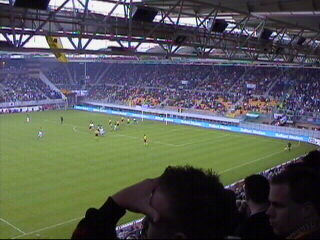
In de 13e min. scoort Patrick Paauwe.
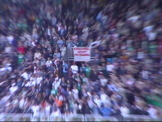
De Kerkdriel- en Someren-supporters gaan uit
hun dak.
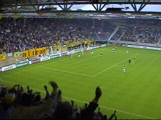
De gelijkmaker van Tom Soetaers in de 37e min.
is een merkwaardige. Zowel Soetaers als doelman
Zoetebier maken hands. Zoetebier doet dat eerder
zodat deze feitelijk rood had moeten krijgen en
Roda een vrije trap.
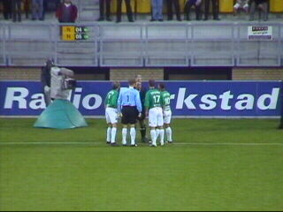
Protesten van Feyenoorders halen niets uit.
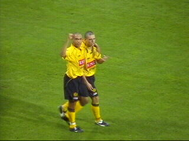
Jool = jool!
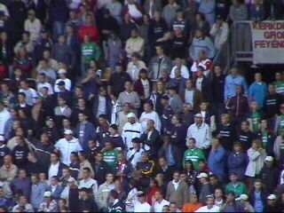
Kerkdriel/Someren hield zich rustig deze keer.
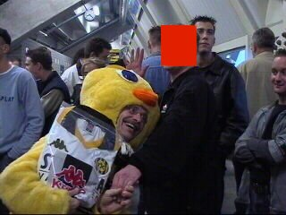
In de pauze reikte Tweety een Roda-shirt uit aan
Ivo de winnaar van een Rodaworldprijsvraag.
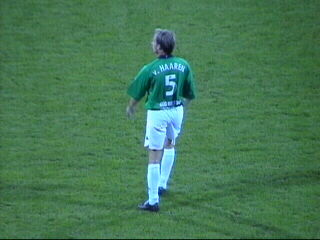
Ex-Rodaspeler Ramon van Haaren in het groen.
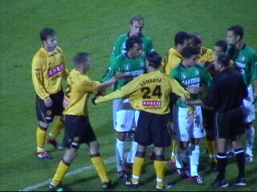
Scheidsrechter Ruud Bossen tussen een kluwen
opgewonden spelers. De grootste etterbak van
Nederlands velden was opmerkelijk vaak bij de
diverse opstootjes betrokken.
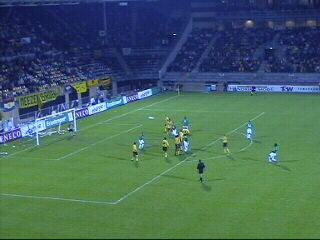
De derde vrije trap in deze wedstrijd van Pierre
v. H. is er een zoals hij ze vaker maakt: perfect!
In de 82e min. zet hij Feyenoord zo op 1-2.
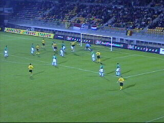
In de 87320" HEIGHT="240" ALIGN="BOTTOM" BORDER="0">
In de 87e min. slaat Soetaers voor de tweede
keer toe: 2-2.
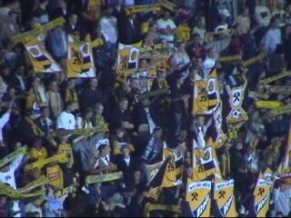
Op west hadden ze leuke bordjes.
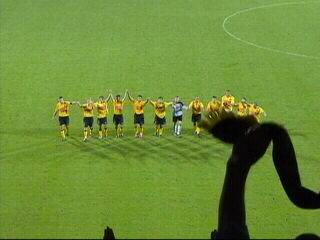
Yooooooow (deze keer ook voor zuid).
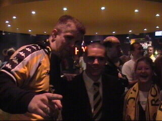
Cox 10 geeft mediatraining aan Soetaers welke
een korte uitleg over het handsgeval geeft.
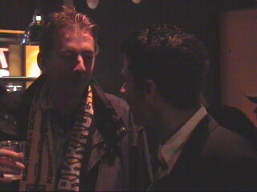
Beavis maakt een praatje met Jerome Collinet.